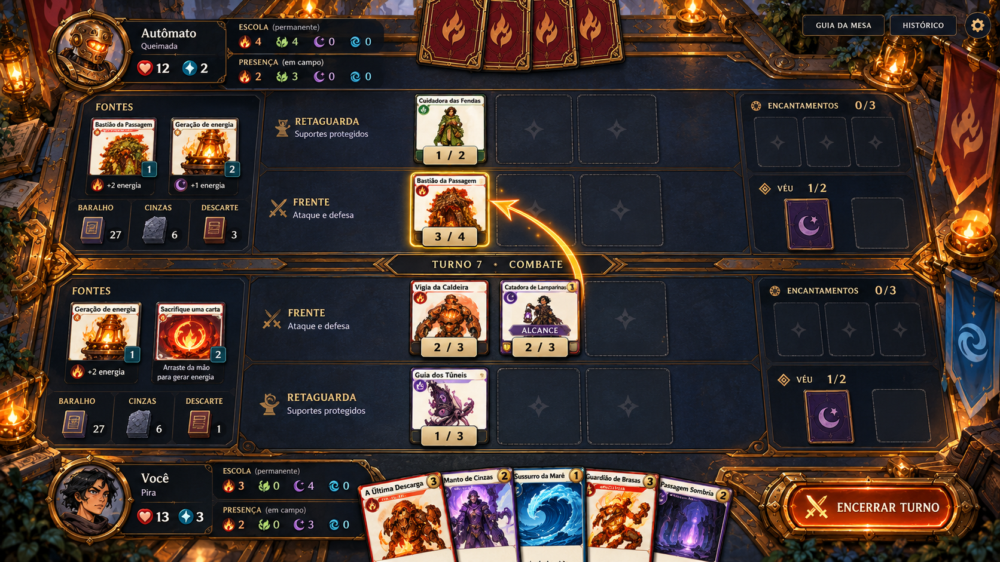

<!doctype html>
<html lang="pt-BR"><meta charset="utf-8"><meta name="viewport" content="width=device-width,initial-scale=1"><title>Wizards Battle — Direções da batalha</title>
<style>
*{box-sizing:border-box}body{margin:0;height:100dvh;display:grid;grid-template-rows:auto minmax(0,1fr) auto;background:#0c141b;color:#f4e6ca;font:15px system-ui,sans-serif}header{padding:14px 22px;display:flex;align-items:center;gap:20px;border-bottom:1px solid #84643a}h1{font:23px Georgia;margin:0 0 4px}small{color:#c4b9a7}nav{display:flex;gap:9px;margin-left:auto}button{font:inherit;color:inherit;border:1px solid #987443;background:#17242e;border-radius:5px;padding:11px 16px;cursor:pointer}button[aria-pressed=true]{background:#d4b477;color:#151c22}button:focus-visible,a:focus-visible{outline:3px solid #91e0e7;outline-offset:3px}main{min-height:0}figure{height:100%;margin:0;padding:12px 20px;display:grid;grid-template-rows:minmax(0,1fr) auto;gap:10px}#concept{width:100%;height:100%;min-height:0;object-fit:contain}figcaption{max-width:1380px;margin:auto;line-height:1.55}strong{color:#efcc89}footer{padding:10px 22px;border-top:1px solid #685235;color:#c3b8a5;font-size:12px;display:flex;gap:16px;justify-content:space-between}a{color:#edcf96}@media(max-width:850px){header{flex-wrap:wrap;padding:10px}nav{margin:0;flex-wrap:wrap}button{padding:8px}figure{padding:6px}figcaption{font-size:13px}footer{font-size:11px}h1{font-size:19px}}
</style>
<header><div><h1>Wizards Battle · A arte da batalha</h1><small>Três estudos no universo do Santuário · escolha pendente</small></div><nav aria-label="Direções da mesa"><button data-key="a" aria-pressed="true">A · Mesa do Pulso</button><button data-key="b" aria-pressed="false">B · Arena do Coração</button><button data-key="c" aria-pressed="false">C · Atlas do Conclave</button></nav></header>
<main><figure><figcaption id="caption"><strong>A — Mesa do Pulso · recomendação.</strong> Mais próxima da home escolhida: mesa física, materiais ricos nas bordas e campo central calmo. Custo médio; cuidar do peso das molduras.</figcaption></figure></main>
<footer><span>Conceitos ilustrados. Faces, ícones e números nas imagens são representações; a produção preservará as cartas originais e os dados do motor.</span><a id="full" href="batalha-a.png" target="_blank" rel="noopener">Ver imagem integral ↗</a></footer>
<script>
const variants={a:{title:'Mesa do Pulso',description:'Mais próxima da home escolhida: mesa física, materiais ricos nas bordas e campo central calmo. Custo médio; cuidar do peso das molduras.'},b:{title:'Arena do Coração',description:'Mais ritual e espetáculo: anéis mecânicos, nichos e canais de luz. Custo alto; a decoração precisa ceder espaço às cartas e aos alvos.'},c:{title:'Atlas do Conclave',description:'Mais tática e legível: ardósia, abas de pergaminho e divisórias finas. Custo relativo menor; preservar textura e mundo para não virar um dashboard.'}};
document.querySelectorAll('nav button').forEach(button=>button.addEventListener('click',()=>{const key=button.dataset.key,variant=variants[key];document.querySelectorAll('nav button').forEach(b=>b.setAttribute('aria-pressed',String(b===button)));document.querySelector('#concept').src='batalha-'+key+'.png';document.querySelector('#concept').alt=key.toUpperCase()+' — '+variant.title;document.querySelector('#caption').innerHTML='<strong>'+key.toUpperCase()+' — '+variant.title+(key==='a'?' · recomendação':'')+'.</strong> '+variant.description;document.querySelector('#full').href='batalha-'+key+'.png'}));
</script></html>
